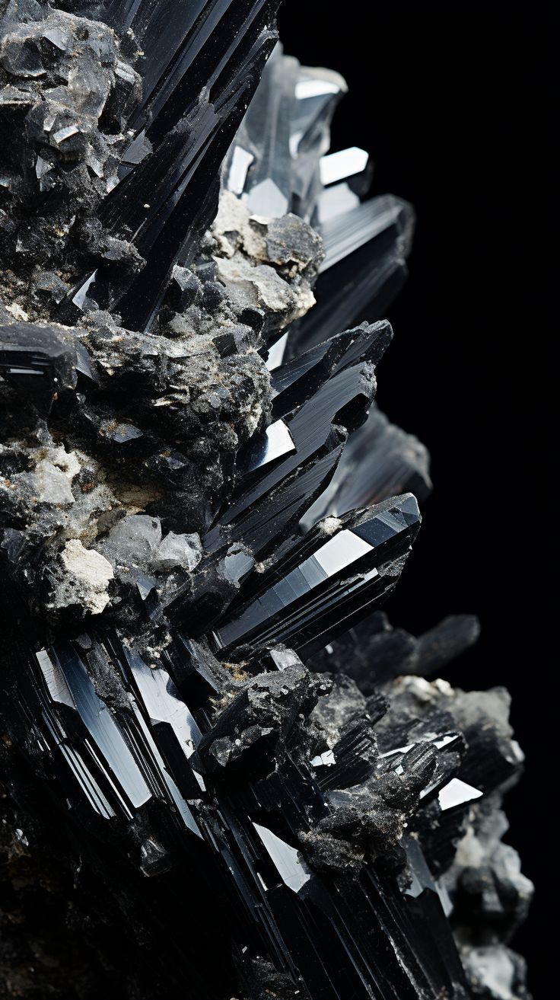

Nayra Elhara
Bienvenida al Portal de Nayra
Un espacio para despertar tu luz interior con guía espiritual y energía sagrada.
Canalizaciones
Recibe mensajes del alma a través de Nayra y sus dones espirituales.
Catálogo Espiritual
Cuarzo Rosa
Amor propio y sanación emocional.
Amatista
Calma mental y conexión espiritual.

Obsidiana Negra
Protección energética profunda.

Amuleto Lunar
Intuición y conexión con lo femenino sagrado.
Oráculo de Nayra
Servicios Espirituales
- Libros Canalizados: Publicaciones escritas por Nayra con mensajes de luz.
- Retiros Espirituales: Viajes y encuentros sagrados en Villa de Leyva.
- Sesiones Personalizadas: Lecturas, oráculos y activaciones energéticas por cita.